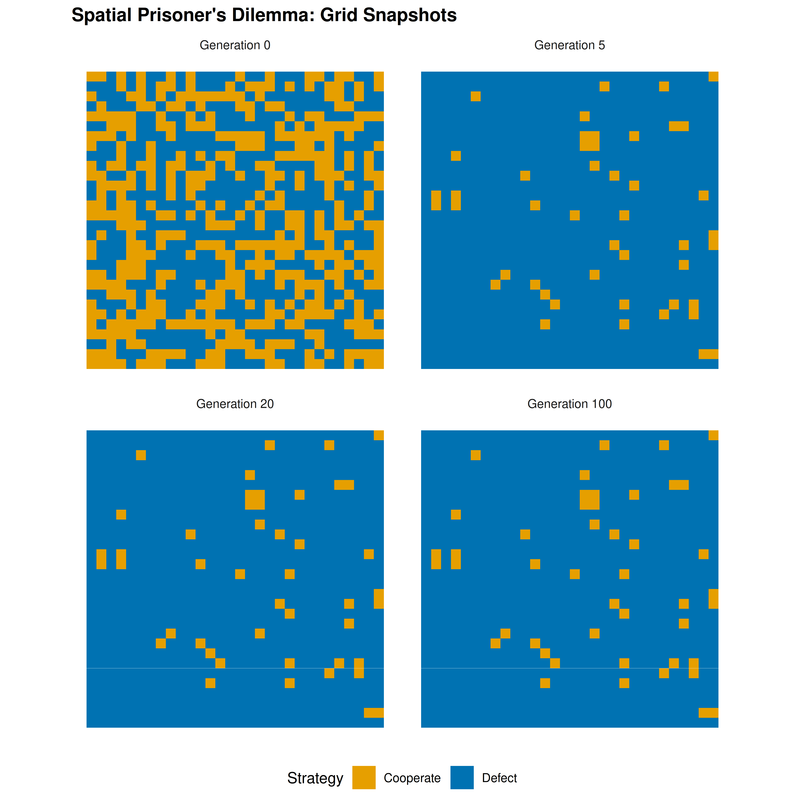
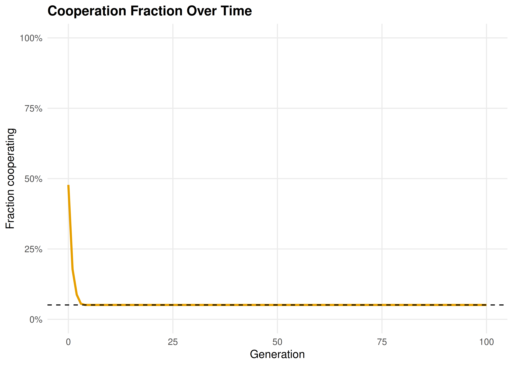

19 Spatial Prisoner’s Dilemma
A computational exploration of Nowak and May’s spatial Prisoner’s Dilemma, showing how local interaction on a lattice allows cooperation to survive through cluster formation — even without memory, reciprocity, or reputation.
Learning objectives
- Explain why spatial structure can sustain cooperation in the Prisoner’s Dilemma without reciprocity or punishment.
- Implement a lattice-based spatial PD with Moore neighborhood interaction and imitation dynamics in R.
- Visualize the emergence and persistence of cooperator clusters on a grid.
- Analyze how the fraction of cooperators evolves over time under different payoff parameters.
19.1 Motivation
In 18, cooperation emerged because players could remember past interactions and condition their behavior on history. But many biological and social systems lack this luxury. Bacteria, plants, and even commuters on a highway interact with nearby neighbors without tracking individual histories. Can cooperation survive when there is no memory, no reputation, and no punishment — only spatial structure?
In 1992, Martin Nowak and Robert May (1992) showed that the answer is yes. They placed players on a two-dimensional grid where each cell plays a one-shot Prisoner’s Dilemma with its immediate neighbors. After each round, every cell adopts the strategy of whichever neighbor (including itself) scored highest. The result was striking: cooperators formed compact clusters that could resist invasion by defectors, producing intricate, dynamic spatial patterns.
This chapter replicates their model in R. We will build a lattice simulation, watch cooperation clusters emerge, and measure how population-level cooperation rates evolve over time.
19.2 Theory
19.2.1 From well-mixed to spatial populations
Standard evolutionary game theory assumes a well-mixed population: every individual is equally likely to interact with every other. Under this assumption, defection dominates in a one-shot Prisoner’s Dilemma because a defector always earns more than a cooperator against any given opponent.
Spatial structure breaks this assumption. When interaction is local — each player meets only its geographic neighbors — cooperators can form clusters. Within a cluster, cooperators interact mainly with other cooperators, earning the mutual cooperation payoff \(R\) many times. A defector on the boundary of such a cluster exploits its cooperator neighbors but has fewer cooperator neighbors than cooperators in the cluster interior do.
19.2.2 The Nowak–May model
The model works as follows:
- Grid: An \(N \times N\) lattice with periodic boundary conditions (a torus, so edges wrap around).
- Strategies: Each cell is either a cooperator (C) or a defector (D).
- Interaction: Each cell plays a one-shot PD with each of its eight Moore neighbors and itself (nine games total). The cell’s score is the sum of payoffs from all nine games.
- Update: Synchronously, every cell adopts the strategy of the highest-scoring cell in its Moore neighborhood (including itself). Ties are broken in favor of the current occupant.
With canonical PD payoffs (\(T > R > P > S\)), the dynamics depend critically on the temptation-to-defect parameter \(b = T/R\). For moderate values of \(b\), cooperators and defectors coexist in dynamic spatial patterns. For very high \(b\), defection takes over; for low \(b\), cooperation dominates.
19.2.3 Why clusters protect cooperators
Consider a \(3 \times 3\) block of cooperators surrounded by defectors. The cooperator at the center plays nine cooperators (including itself), scoring \(9R\). A defector adjacent to this block has at most three cooperator neighbors, scoring at most \(3T + 6P\). When \(9R > 3T + 6P\) — that is, when \(b < 3(R - P/R) + P\) approximately — the interior cooperator outscores the boundary defector, and the cluster holds. This is the geometric logic behind spatial cooperation.
19.3 Implementation in R
19.3.1 Grid initialization and neighbor scoring
initialize_grid <- function(n, prob_coop = 0.5) {
matrix(sample(c("C", "D"), n * n, replace = TRUE,
prob = c(prob_coop, 1 - prob_coop)),
nrow = n, ncol = n)
}
get_moore_neighbors <- function(grid, i, j) {
n <- nrow(grid)
rows <- ((i - 2):(i)) %% n + 1
cols <- ((j - 2):(j)) %% n + 1
grid[rows, cols]
}
score_cell <- function(grid, i, j) {
neighbors <- get_moore_neighbors(grid, i, j)
focal <- grid[i, j]
total <- 0
for (s in as.vector(neighbors)) {
total <- total + play_round(focal, s)[1]
}
total
}
compute_scores <- function(grid) {
n <- nrow(grid)
scores <- matrix(0, nrow = n, ncol = n)
for (i in seq_len(n)) {
for (j in seq_len(n)) {
scores[i, j] <- score_cell(grid, i, j)
}
}
scores
}19.3.2 Update rule: imitate the best neighbor
update_grid <- function(grid, scores) {
n <- nrow(grid)
new_grid <- grid
for (i in seq_len(n)) {
for (j in seq_len(n)) {
rows <- ((i - 2):(i)) %% n + 1
cols <- ((j - 2):(j)) %% n + 1
neighborhood_scores <- scores[rows, cols]
best <- which(neighborhood_scores == max(neighborhood_scores),
arr.ind = TRUE)
if (nrow(best) == 1) {
bi <- rows[best[1, 1]]
bj <- cols[best[1, 2]]
new_grid[i, j] <- grid[bi, bj]
}
# Tie: keep current strategy (new_grid[i,j] already equals grid[i,j])
}
}
new_grid
}19.3.3 Running the simulation
run_spatial_pd <- function(n, generations, prob_coop = 0.5, seed = 42) {
set.seed(seed)
grid <- initialize_grid(n, prob_coop)
history <- vector("list", generations + 1)
history[[1]] <- grid
coop_frac <- numeric(generations + 1)
coop_frac[1] <- mean(grid == "C")
for (g in seq_len(generations)) {
scores <- compute_scores(grid)
grid <- update_grid(grid, scores)
history[[g + 1]] <- grid
coop_frac[g + 1] <- mean(grid == "C")
}
list(history = history, coop_frac = coop_frac)
}19.4 Worked example
We simulate a \(30 \times 30\) grid with \(50\%\) initial cooperators for 100 generations, using the canonical PD payoffs (\(T = 5\), \(R = 3\), \(P = 1\), \(S = 0\)).
result <- run_spatial_pd(n = 30, generations = 100, prob_coop = 0.5, seed = 42)
snapshot_gens <- c(0, 5, 20, 100)
snapshot_df <- map_dfr(snapshot_gens, function(g) {
grid_to_df(result$history[[g + 1]], g)
})
snapshot_df$generation <- factor(
snapshot_df$generation,
levels = snapshot_gens,
labels = paste("Generation", snapshot_gens)
)
p_snapshots <- ggplot(snapshot_df,
aes(x = col, y = row, fill = strategy)) +
geom_tile() +
facet_wrap(~generation, ncol = 2) +
scale_fill_manual(values = c("C" = okabe_ito[1], "D" = okabe_ito[5]),
labels = c("C" = "Cooperate", "D" = "Defect"),
name = "Strategy") +
coord_equal() +
theme_publication() +
theme(axis.text = element_blank(),
axis.ticks = element_blank(),
panel.grid.major = element_blank()) +
labs(title = "Spatial Prisoner's Dilemma: Grid Snapshots",
x = NULL, y = NULL)
p_snapshots
Figure 19.1: Grid snapshots at generations 0, 5, 20, and 100. Cooperators (orange) form compact clusters that resist invasion by defectors (blue). By generation 20, the spatial pattern has largely stabilized into a dynamic equilibrium.
save_pub_fig(p_snapshots, "spatial-pd-snapshots", width = 8, height = 8)The initial random arrangement (generation 0) shows a salt-and-pepper mixture. By generation 5, cooperators have begun to aggregate into clusters while isolated cooperators surrounded by defectors have been converted. By generation 20, the pattern has largely stabilized: compact cooperator clusters persist, separated by defector boundaries. The clusters are not static — their edges shift over time — but the overall cooperation level remains roughly stable.
coop_df <- tibble(
generation = 0:100,
cooperation = result$coop_frac
)
p_coop <- ggplot(coop_df, aes(x = generation, y = cooperation)) +
geom_line(colour = okabe_ito[1], linewidth = 1) +
geom_hline(yintercept = mean(result$coop_frac[51:101]),
linetype = "dashed", colour = okabe_ito[8]) +
scale_y_continuous(labels = label_percent(), limits = c(0, 1)) +
theme_publication() +
labs(title = "Cooperation Fraction Over Time",
x = "Generation", y = "Fraction cooperating")
p_coop
Figure 19.2: Cooperation fraction over 100 generations. After an initial transient where isolated cooperators are eliminated, the cooperation rate stabilizes around a dynamic equilibrium. Spatial structure sustains a substantial level of cooperation even in the one-shot Prisoner’s Dilemma.
save_pub_fig(p_coop, "spatial-pd-cooperation", width = 7, height = 5)#> Initial cooperation rate: 47.8%#> Final cooperation rate: 5.1%#> Mean cooperation (gen 50-100): 5.1%The cooperation rate drops sharply in the first few generations as isolated cooperators are eliminated. It then stabilizes as surviving cooperators form self-reinforcing clusters. The long-run cooperation rate depends on the payoff parameters — with the canonical values used here, spatial structure sustains cooperation at a level far above zero, even though defection would dominate in a well-mixed population.
19.5 Extensions
- Varying temptation: As the temptation payoff \(T\) increases (holding other payoffs fixed), the sustainable cooperation rate decreases. There is a critical threshold above which cooperators go extinct even with spatial structure. Experimenting with this threshold is a good exercise.
- Stochastic update rules: Instead of deterministic imitation of the best neighbor, one can use probabilistic rules where the probability of adopting a neighbor’s strategy increases with the neighbor’s payoff advantage. This connects to the Fermi update rule and reduces sensitivity to small payoff differences.
- Network structure: The lattice is a special case of a network. Cooperation dynamics on random graphs, scale-free networks, and small-world networks exhibit qualitatively different behavior (22).
- Evolutionary stability: The spatial model shows that cooperation can be an evolutionarily stable configuration even when it is not an ESS in the well-mixed case (21).
- For the original model, see Nowak & May (1992). For a comprehensive review of spatial evolutionary games, see Szabó & Fáth (2007).
Exercises
Effect of grid size. Run the spatial PD on grids of size \(10 \times 10\), \(30 \times 30\), and \(50 \times 50\) with the same initial cooperation probability (50%). How does the long-run cooperation rate depend on grid size? Explain why boundary effects matter more on smaller grids.
Temptation threshold. Fix \(R = 3\), \(P = 1\), \(S = 0\) and vary \(T\) from 3.5 to 8 in increments of 0.5. For each value, run the simulation for 100 generations and record the final cooperation rate. Plot cooperation rate vs. \(T\) and identify the approximate threshold where cooperators go extinct. (Hint: modify
play_round()to accept custom payoffs.)Initial cluster. Instead of random initial placement, start with a single \(5 \times 5\) block of cooperators in the center of a \(30 \times 30\) grid of defectors. Does the cooperator block survive? Grow? How does the outcome depend on \(T\)?
Solutions appear in D.